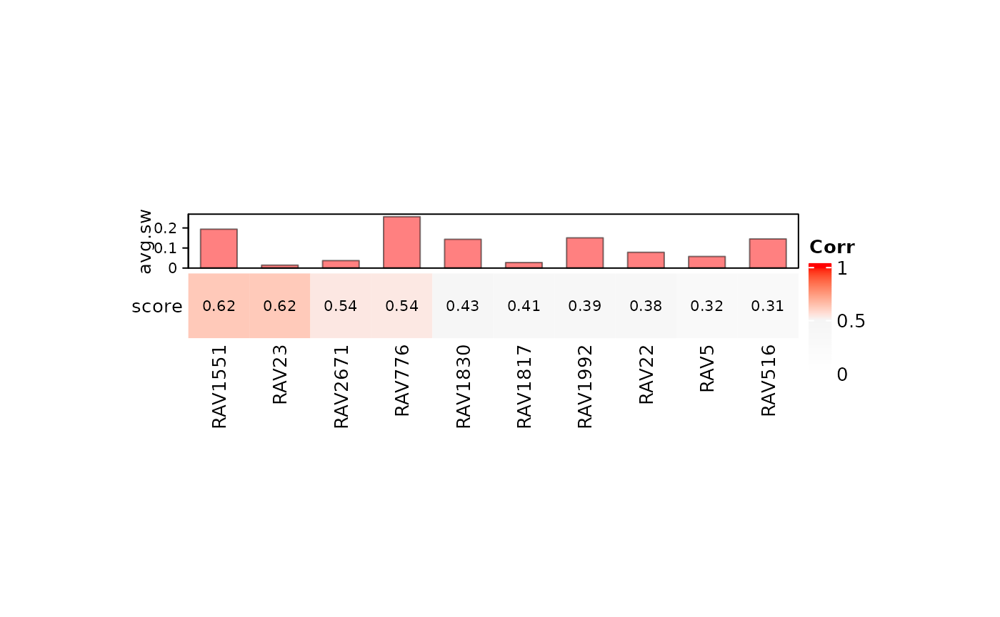
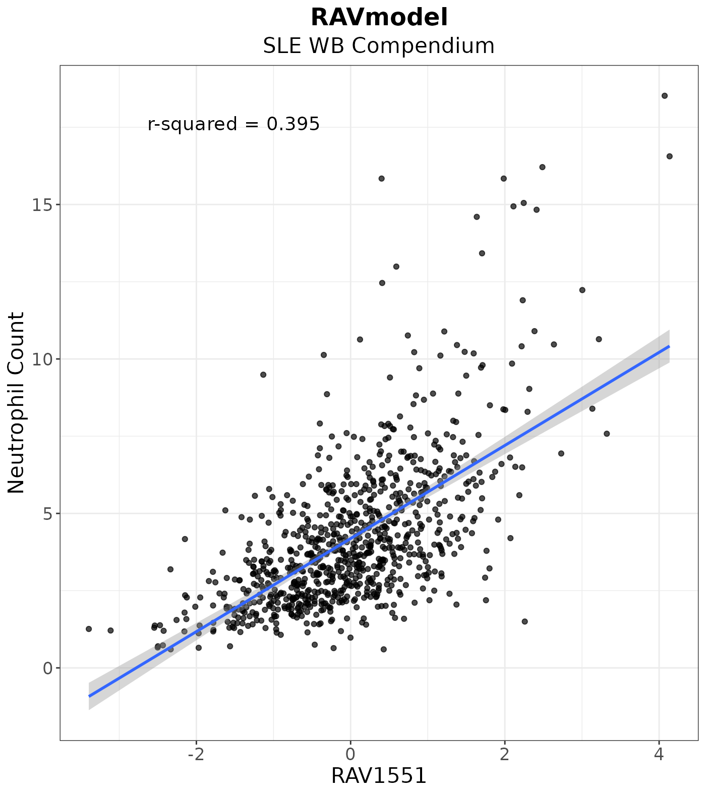

Analyze neutrophil counts of SLE-WB Compendium data
Sehyun Oh
March 16, 2022
Source:vignettes/SLE-WB/neutrophil_counts_SLE-WB.Rmd
neutrophil_counts_SLE-WB.RmdAbstract
Source CodeSetup
RAVs encompass biological signals applicable across different platforms and independent datasets. We demonstrate this transfer learning capacity of RAVs by identifying the neutrophil-associated RAV from systemic lupus erythematosus whole blood (SLE-WB) data and using the same RAV to analyze nasal brushing (NARES) dataset. SLE-WB part of the analysis is described in this vignette and NARES part of the analysis can be found here.
In this vignette, we reproduce Figure 3B and 3C of the MultiPLIER paper and expand the same analysis using GenomicSuperSignature. Analyses here are referencing scripts in this vignette.
Load packages
if (!"GenomicSuperSignaturePaper" %in% installed.packages())
devtools::install_github("shbrief/GenomicSuperSignaturePaper")
suppressPackageStartupMessages({
library(GenomicSuperSignature)
library(GenomicSuperSignaturePaper)
library(dplyr)
})RAVmodel
To directly compare our new analysis with the results from MultiPLIER paper, we used the RAVmodel annotated with the same priors as MultiPLER: bloodCellMarkersIRISDMAP, svmMarkers, and canonicalPathways.
RAVmodel <- getModel("PLIERpriors", load=TRUE)
RAVmodel
#> class: PCAGenomicSignatures
#> dim: 13934 4764
#> metadata(8): cluster size ... version geneSets
#> assays(1): RAVindex
#> rownames(13934): CASKIN1 DDX3Y ... CTC-457E21.9 AC007966.1
#> rowData names(0):
#> colnames(4764): RAV1 RAV2 ... RAV4763 RAV4764
#> colData names(4): RAV studies silhouetteWidth gsea
#> trainingData(2): PCAsummary MeSH
#> trainingData names(536): DRP000987 SRP059172 ... SRP164913 SRP188526
updateNote(RAVmodel)
#> [1] "GSEA with set.seed"SLE-WB data (E-GEOD-65391)
Expression data
Pre-processed expression data is downloaded from here and saved under Results/SLE-WB/data directory.
fname <- "data/SLE_WB_all_microarray_QN_zto_before_with_GeneSymbol.pcl"
exprs <- readr::read_tsv(fname) %>% as.data.frame
rownames(exprs) <- exprs$GeneSymbol
dataset <- as.matrix(exprs[,3:ncol(exprs)]) # 15,825 genes x 1,640 samples
dim(dataset)
#> [1] 15827 1640
dataset[1:2, 1:4]
#> GSM955680_DNA10204-001.CEL GSM955681_DNA10204-003.CEL
#> NAT2 0.2872200 0.6788542
#> ADA 0.7331941 0.6073631
#> GSM955682_DNA10204-005.CEL GSM955683_DNA10204-007.CEL
#> NAT2 0.0000000 0.4627302
#> ADA 0.5483356 0.4294504Metadata
Metadata is downloaded from here and saved under Results/SLE-WB/data directory.
meta <- read.table("data/E-GEOD-65391.sdrf.txt", sep = "\t", header = TRUE)
dim(meta) # 966 samples have metadata
#> [1] 996 224Neutrophil-related metadata
We searched for the keyword, “neutrophil”, and found four columns with the neutrophil-related metadata.
ind <- grep("neutrophil", colnames(meta), ignore.case = TRUE)
colnames(meta)[ind]
#> [1] "Characteristics..neutrophil_count."
#> [2] "Characteristics..neutrophil_percent."
#> [3] "FactorValue..neutrophil_count."
#> [4] "FactorValue..neutrophil_percent."Neutrophil counts information ("Characteristics..neutrophil_count.") is subset and cleaned.
neutrophilCount <- meta[,c("Source.Name", "Characteristics..neutrophil_count.")]
## Clean the `Source.Name` column
cleaned_name <- sapply(neutrophilCount[,1],
function(x) stringr::str_split(x, " ")[[1]][1])
neutrophilCount[,1] <- cleaned_name
## 143 NAs were introduced by coercion due to the missing data
neutrophilCount[,2] <- as.numeric(neutrophilCount[,2])
na_ind <- which(is.na(as.numeric(neutrophilCount[,2])))
## 853 samples with metadata after clean-up
neutrophilCount <- neutrophilCount[-na_ind,]
colnames(neutrophilCount)[2] <- "Neutrophil.Count"MCPCounter
Neutrophil count showed a somewhat weak correlation with the scores assigned by LV (latent variable, an equivalent of RAV in MultiPLIER model) and the MultiPLIER authors suspected that it’s likely because the neutrophils are terminally differentiated cells and using gene expression as a measure of it might be under-representative.
To confirm that the weak correlation is not a limitation intrinsic to PLIER models or the MultiPLIER approach, the authors used MCPcounter to estimate cell type abundance in solid tissues and we also took this approach.
- Install MCPcounter
if (!"MCPcounter" %in% installed.packages())
devtools::install_github("ebecht/MCPcounter",
ref = "a79614eee002c88c64725d69140c7653e7c379b4",
subdir = "Source",
dependencies = TRUE)- Run MCPcounter
## Get cell type estimates with MCPcounter
mcp.results <- MCPcounter::MCPcounter.estimate(expression = dataset,
featuresType = "HUGO_symbols")
## Subset only the neutrophil estimates
neutrophil.df <- reshape2::melt(mcp.results) %>%
dplyr::filter(Var1 == "Neutrophils") %>%
dplyr::select(-Var1)
colnames(neutrophil.df) <- c("Sample", "Neutrophil_estimate")
head(neutrophil.df)
#> Sample Neutrophil_estimate
#> 1 GSM1594269 0.5210433
#> 2 GSM1594270 0.4624522
#> 3 GSM1594271 0.6052038
#> 4 GSM1594273 0.3782767
#> 5 GSM1594274 0.5413846
#> 6 GSM1594275 0.5198903Identify the relavant RAV
In this exploratory data analysis section, we used three different ways to narrow down the RAVs that explain SLE-WB data and it’s neutrophil count feature and identified RAV1551 as the best one. Here are the three approaches:
- Validation score
- Keyword ‘neutrophil’ in the enriched pathways
- Metadata association
Validation
We collected the top 10 validated RAVs with positive average silhouette width. Here, RAV1551 has the highest score with the positive average silhouette width.
val_all <- validate(dataset, RAVmodel)
validated_ind <- validatedSignatures(val_all, num.out = 10, RAVmodel,
swCutoff = 0, indexOnly = TRUE)
validated_ind
#> [1] 1551 23 2671 776 1830 1817 1992 22 5 516
heatmapTable(val_all, RAVmodel, num.out = 10, swCutoff = 0)
Keyword search
We search the keyword, ‘neutrophil’, in the GSEA annotation of RAVmodel and select the top three enriched pathways (both up- and down- regulated). We found 13 RAVs where the two of the top three enriched pathways contain the keyword and RAV1551 is one of them.
## RAVs containing the keyword, "neutrophil", within top 3 enriched pathways
findSignature(RAVmodel, "neutrophil", n = 3)
#> # of keyword-containing pathways Freq
#> 1 0 4651
#> 2 1 101
#> 3 2 12
## RAVs with two keyword-containing pathways
sig_ind <- findSignature(RAVmodel, "neutrophil", n = 3, k = 2)
sig_ind
#> [1] 5 7 24 147 172 216 1073 1306 1551 1917 2530 2667Metadata-associated
We used r-squared value to identify the metadata-associated RAV. (r-squared is the proportion of the variance in the dependent variable that is predictable from the independent variable.) rsq function takes a data frame (data argument) where each column represents different variables. rsq calculates the r-squared values between the two variables (lv and y.var arguments) and returns the numeric vector of them.
calculateRsq <- function (x, y) cor(x, y) ^ 2
rsq <- function(data, lv, y.var = "Neutrophil_estimate") {
res <- calculateRsq(data[, lv], data[, y.var]) %>% round(., 3)
return(res)
}Sample Score
sampleScore <- calculateScore(dataset, RAVmodel)
dim(sampleScore)
#> [1] 853 4764
sampleScore[1:4, 1:4]
#> RAV1 RAV2 RAV3 RAV4
#> GSM1594269 -0.8040057 0.70872695 -0.7941899 0.6156738
#> GSM1594270 0.9403239 -1.13442804 0.3388302 -0.1309143
#> GSM1594271 -1.1120027 2.28676223 -1.8671431 -1.1363525
#> GSM1594273 0.3042759 -0.01665221 -1.0239362 0.7001629Neutrophil count
We selected the top ten r-squared values between the neutrophil count and all RAVs.
ss <- as.data.frame(sampleScore)
ss$Source.Name <- rownames(ss)
## Combine neutrophil count and sample scores
ss_count <- dplyr::left_join(neutrophilCount, ss, by = "Source.Name")
## Calculate r-squared value for all RAVs
rsq_count <- sapply(3:ncol(ss_count),
function(x) {rsq(ss_count, x, y.var = "Neutrophil.Count")})
names(rsq_count) <- colnames(ss_count)[3:ncol(ss_count)]
rsq_count <- sort(rsq_count, decreasing = TRUE)
## RAVs with top 10 r-squared value
topRAVs <- head(rsq_count, 10)
topRAVs <- gsub("RAV", "", names(topRAVs)) %>% as.numeric
topRAVs
#> [1] 3796 2667 16 7 2684 776 1551 1881 4088 2674Neutrophil estimate
Above, we identified RAV1551 in the three different approaches. Here, RAV1551 shows the highest r-squared value among all RAVs when compared to neutrophil estimate. This confirms that RAV1551 best represents the neutrophil feature of SLE-WB dataset.
sampleScore.df <- sampleScore %>% as.data.frame(.) %>%
tibble::rownames_to_column(.)
colnames(sampleScore.df)[1] <- "Sample"
## Join all the scores with neutrophil estimates
dat_n.estimate <- dplyr::inner_join(neutrophil.df, sampleScore.df, by="Sample")
dim(dat_n.estimate)
#> [1] 853 4766
dat_n.estimate[1:4, 1:4]
#> Sample Neutrophil_estimate RAV1 RAV2
#> 1 GSM1594269 0.5210433 -0.8040057 0.70872695
#> 2 GSM1594270 0.4624522 0.9403239 -1.13442804
#> 3 GSM1594271 0.6052038 -1.1120027 2.28676223
#> 4 GSM1594273 0.3782767 0.3042759 -0.01665221
## RAVs with the high r-squared values with the neutrophil estimate
rsq_estimate <- sapply(3:ncol(dat_n.estimate), function(x) {rsq(dat_n.estimate,x)})
names(rsq_estimate) <- colnames(dat_n.estimate)[3:ncol(dat_n.estimate)]
rsq_estimate <- sort(rsq_estimate, decreasing = TRUE)
head(rsq_estimate)
#> RAV1551 RAV7 RAV1073 RAV2632 RAV23 RAV2671
#> 0.816 0.813 0.804 0.797 0.795 0.779Conclusion
We recovered RAV1551 as the neutrophil-associated signature through validation, GSEA, and metadata-association. This result is confirmed again with the highest r-squared value between RAV1551 score and the neutrophil estimate.
Neutrophil Count
count_plot <- LVScatter(ss_count, paste0("RAV", 1551),
y.var = "Neutrophil.Count",
ylab = "Neutrophil Count",
title = "RAVmodel",
subtitle = "SLE WB Compendium")
count_plot
Neutrophil Estimate
estimate_plot <- LVScatter(dat_n.estimate, paste0("RAV", 1551),
y.var = "Neutrophil_estimate",
ylab = "MCPcounter neutrophil estimate",
title = "RAVmodel",
subtitle = "SLE WB MCPcounter")
estimate_plot
#> agg_png
#> 2Other EDA
GSEA
gseaRes <- gsea(RAVmodel)[[1551]]
gseaRes <- gseaRes[order(gseaRes$NES, decreasing = TRUE),]
keyword_ind <- grep("neutrophil", gseaRes$Description, ignore.case = TRUE)All the enriched pathways for RAV1551 with the minimum p-value of 1.8038278^{-9}
gseaRes$Description
#> [1] "IRIS_Neutrophil-Resting"
#> [2] "IRIS_Monocyte-Day0"
#> [3] "SVM Neutrophils"
#> [4] "DMAP_MONO2"
#> [5] "SVM Monocytes"
#> [6] "DMAP_GRAN2"
#> [7] "DMAP_MONO1"
#> [8] "IRIS_Monocyte-Day1"
#> [9] "IRIS_Monocyte-Day7"
#> [10] "REACTOME_METABOLISM_OF_PROTEINS"
#> [11] "MIPS_55S_RIBOSOME_MITOCHONDRIAL"
#> [12] "REACTOME_INFLUENZA_LIFE_CYCLE"
#> [13] "REACTOME_TRANSLATION"
#> [14] "REACTOME_3_UTR_MEDIATED_TRANSLATIONAL_REGULATION"
#> [15] "DMAP_TCELLA2"
#> [16] "REACTOME_INFLUENZA_VIRAL_RNA_TRANSCRIPTION_AND_REPLICATION"
#> [17] "MIPS_NOP56P_ASSOCIATED_PRE_RRNA_COMPLEX"
#> [18] "REACTOME_NONSENSE_MEDIATED_DECAY_ENHANCED_BY_THE_EXON_JUNCTION_COMPLEX"
#> [19] "KEGG_RIBOSOME"
#> [20] "MIPS_RIBOSOME_CYTOPLASMIC"
#> [21] "REACTOME_PEPTIDE_CHAIN_ELONGATION"
#> [22] "REACTOME_SRP_DEPENDENT_COTRANSLATIONAL_PROTEIN_TARGETING_TO_MEMBRANE"We ordered the enriched pathways of RAV1551 based on NES and the keyword-containing pathways were placed 1,3 out of 22.
gseaRes[keyword_ind, c("Description", "NES", "qvalues")]
#> Description NES qvalues
#> IRIS_Neutrophil-Resting IRIS_Neutrophil-Resting 4.242584 1.803828e-09
#> SVM Neutrophils SVM Neutrophils 3.328093 1.803828e-09Annotate PCs
We checked how the top PCs of SLE-WB data are annotated using annotatePC.
# Top 8 PCs
annotatePC(1:8, val_all = val_all, RAVmodel = RAVmodel, scoreCutoff = 0)#> PC1.RAV1551 PC2.RAV1875
#> 1 IRIS_Neutrophil-Resting REACTOME_CELL_CYCLE
#> 2 IRIS_Monocyte-Day0 REACTOME_METABOLISM_OF_PROTEINS
#> 3 SVM Neutrophils REACTOME_METABOLISM_OF_MRNA
#> 4 DMAP_MONO2 KEGG_OXIDATIVE_PHOSPHORYLATION
#> 5 SVM Monocytes REACTOME_RESPIRATORY_ELECTRON_TRANSPORT_ATP_S...
#> PC3.RAV516 PC4.RAV2905
#> 1 REACTOME_CELL_CYCLE_MITOTIC DMAP_ERY5
#> 2 REACTOME_CELL_CYCLE DMAP_ERY4
#> 3 REACTOME_DNA_REPLICATION DMAP_ERY3
#> 4 REACTOME_MITOTIC_M_M_G1_PHASES <NA>
#> 5 REACTOME_CYTOKINE_SIGNALING_IN_IMMUNE_SYSTEM <NA>
#> PC5.RAV1925 PC6.RAV1830
#> 1 IRIS_Neutrophil-Resting REACTOME_CELL_CYCLE
#> 2 REACTOME_GPCR_DOWNSTREAM_SIGNALING REACTOME_INTERFERON_SIGNALING
#> 3 REACTOME_SIGNALING_BY_GPCR REACTOME_CELL_CYCLE_MITOTIC
#> 4 REACTOME_CYTOKINE_SIGNALING_IN_IMMUNE_SYSTEM REACTOME_DNA_REPLICATION
#> 5 MIPS_RIBOSOME_CYTOPLASMIC REACTOME_MITOTIC_M_M_G1_PHASES
#> PC7.RAV519 PC8.RAV4094
#> 1 DMAP_ERY3 DMAP_ERY3
#> 2 REACTOME_CELL_CYCLE DMAP_ERY4
#> 3 REACTOME_METABOLISM_OF_LIPIDS_AND_LIPOPROTEIN... DMAP_ERY5
#> 4 REACTOME_METABOLISM_OF_AMINO_ACIDS_AND_DERIVA... DMAP_MONO2
#> 5 REACTOME_INNATE_IMMUNE_SYSTEM IRIS_Neutrophil-Resting
# PC1
annotatePC(1, val_all = val_all, RAVmodel = RAVmodel, simplify = FALSE)#> $`PC1-RAV1551`
#> Description NES pvalue qvalues
#> 1 IRIS_Neutrophil-Resting 4.242584 1e-10 1.803828e-09
#> 2 IRIS_Monocyte-Day0 3.420260 1e-10 1.803828e-09
#> 3 SVM Neutrophils 3.328093 1e-10 1.803828e-09
#> 4 DMAP_MONO2 3.173188 1e-10 1.803828e-09
#> 5 SVM Monocytes 3.116177 1e-10 1.803828e-09Session Info
sessionInfo()
#> R version 4.1.2 (2021-11-01)
#> Platform: x86_64-pc-linux-gnu (64-bit)
#> Running under: Ubuntu 20.04.3 LTS
#>
#> Matrix products: default
#> BLAS/LAPACK: /usr/lib/x86_64-linux-gnu/openblas-pthread/libopenblasp-r0.3.8.so
#>
#> locale:
#> [1] LC_CTYPE=en_US.UTF-8 LC_NUMERIC=C
#> [3] LC_TIME=en_US.UTF-8 LC_COLLATE=en_US.UTF-8
#> [5] LC_MONETARY=en_US.UTF-8 LC_MESSAGES=en_US.UTF-8
#> [7] LC_PAPER=en_US.UTF-8 LC_NAME=C
#> [9] LC_ADDRESS=C LC_TELEPHONE=C
#> [11] LC_MEASUREMENT=en_US.UTF-8 LC_IDENTIFICATION=C
#>
#> attached base packages:
#> [1] stats4 stats graphics grDevices utils datasets methods
#> [8] base
#>
#> other attached packages:
#> [1] dplyr_1.0.8 GenomicSuperSignaturePaper_1.0.1
#> [3] GenomicSuperSignature_1.3.4 SummarizedExperiment_1.24.0
#> [5] Biobase_2.54.0 GenomicRanges_1.46.1
#> [7] GenomeInfoDb_1.30.1 IRanges_2.28.0
#> [9] S4Vectors_0.32.3 BiocGenerics_0.40.0
#> [11] MatrixGenerics_1.6.0 matrixStats_0.61.0
#> [13] BiocStyle_2.22.0
#>
#> loaded via a namespace (and not attached):
#> [1] colorspace_2.0-3 ggsignif_0.6.3 rjson_0.2.21
#> [4] ellipsis_0.3.2 rprojroot_2.0.2 circlize_0.4.14
#> [7] XVector_0.34.0 GlobalOptions_0.1.2 fs_1.5.2
#> [10] clue_0.3-60 farver_2.1.0 ggpubr_0.4.0
#> [13] bit64_4.0.5 fansi_1.0.2 splines_4.1.2
#> [16] codetools_0.2-18 doParallel_1.0.17 cachem_1.0.6
#> [19] knitr_1.37 jsonlite_1.8.0 broom_0.7.12
#> [22] cluster_2.1.2 dbplyr_2.1.1 png_0.1-7
#> [25] BiocManager_1.30.16 readr_2.1.2 compiler_4.1.2
#> [28] httr_1.4.2 backports_1.4.1 assertthat_0.2.1
#> [31] Matrix_1.4-0 fastmap_1.1.0 cli_3.2.0
#> [34] htmltools_0.5.2 tools_4.1.2 gtable_0.3.0
#> [37] glue_1.6.2 GenomeInfoDbData_1.2.7 reshape2_1.4.4
#> [40] rappdirs_0.3.3 Rcpp_1.0.8.2 carData_3.0-5
#> [43] jquerylib_0.1.4 pkgdown_2.0.2 vctrs_0.3.8
#> [46] nlme_3.1-155 iterators_1.0.14 xfun_0.30
#> [49] stringr_1.4.0 lifecycle_1.0.1 rstatix_0.7.0
#> [52] zlibbioc_1.40.0 scales_1.1.1 vroom_1.5.7
#> [55] ragg_1.2.2 hms_1.1.1 parallel_4.1.2
#> [58] RColorBrewer_1.1-2 ComplexHeatmap_2.10.0 yaml_2.3.5
#> [61] curl_4.3.2 memoise_2.0.1 ggplot2_3.3.5
#> [64] sass_0.4.0 stringi_1.7.6 RSQLite_2.2.10
#> [67] highr_0.9 desc_1.4.1 foreach_1.5.2
#> [70] filelock_1.0.2 shape_1.4.6 rlang_1.0.2
#> [73] pkgconfig_2.0.3 systemfonts_1.0.4 bitops_1.0-7
#> [76] evaluate_0.15 lattice_0.20-45 purrr_0.3.4
#> [79] labeling_0.4.2 bit_4.0.4 tidyselect_1.1.2
#> [82] plyr_1.8.6 magrittr_2.0.2 bookdown_0.25
#> [85] R6_2.5.1 magick_2.7.3 generics_0.1.2
#> [88] DelayedArray_0.20.0 DBI_1.1.2 mgcv_1.8-38
#> [91] pillar_1.7.0 abind_1.4-5 RCurl_1.98-1.6
#> [94] tibble_3.1.6 crayon_1.5.0 car_3.0-12
#> [97] wordcloud_2.6 utf8_1.2.2 BiocFileCache_2.2.1
#> [100] tzdb_0.2.0 rmarkdown_2.13 GetoptLong_1.0.5
#> [103] grid_4.1.2 blob_1.2.2 digest_0.6.29
#> [106] tidyr_1.2.0 MCPcounter_1.1.0 textshaping_0.3.6
#> [109] munsell_0.5.0 bslib_0.3.1